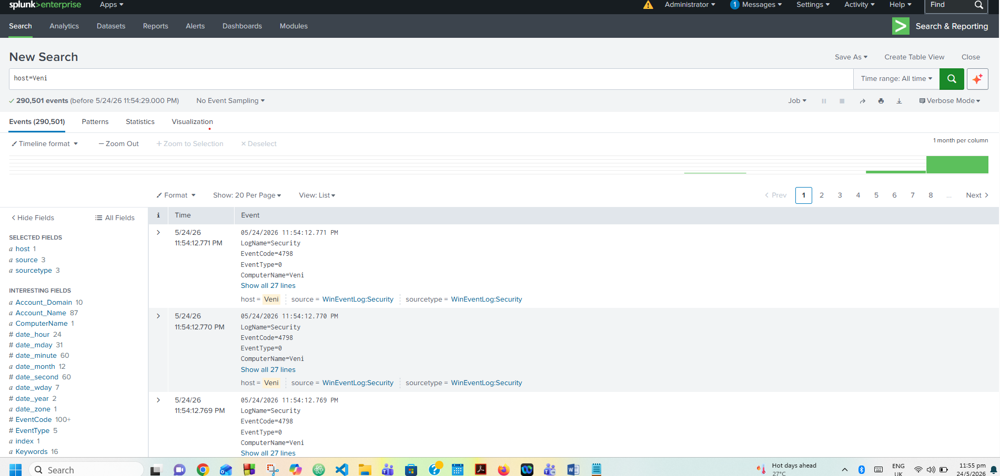
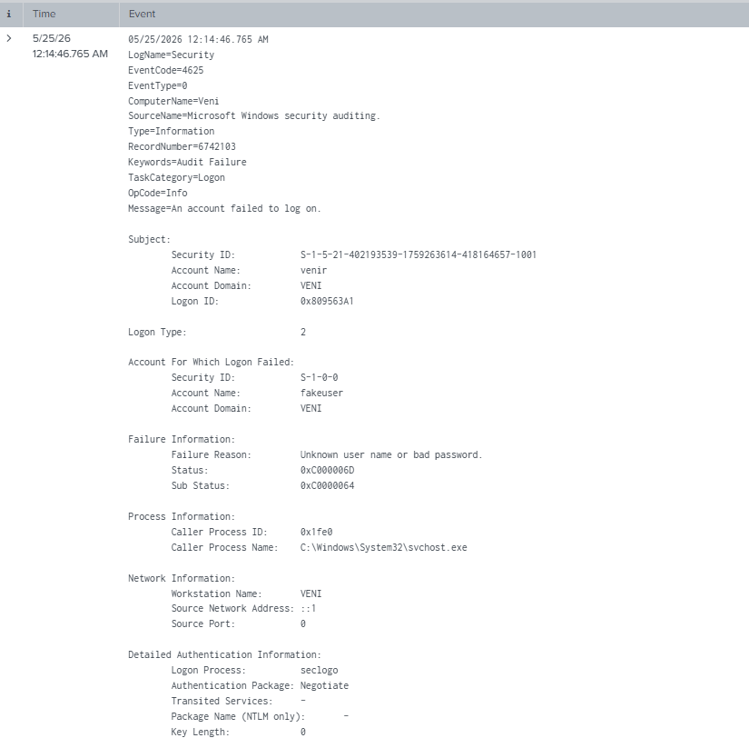
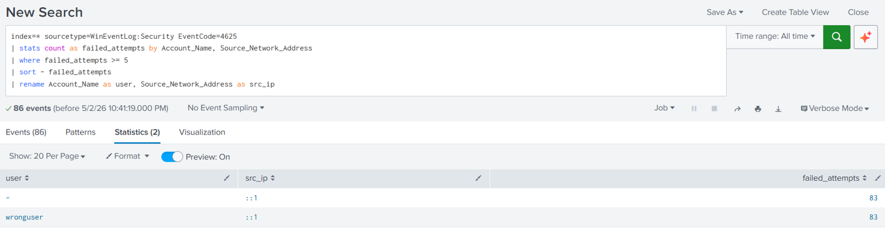
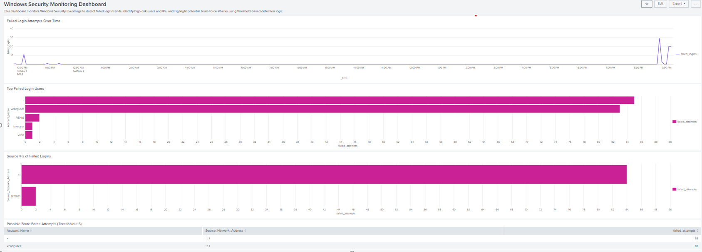
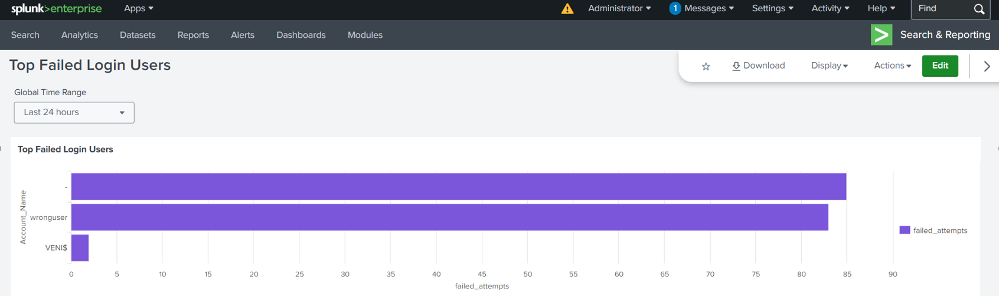
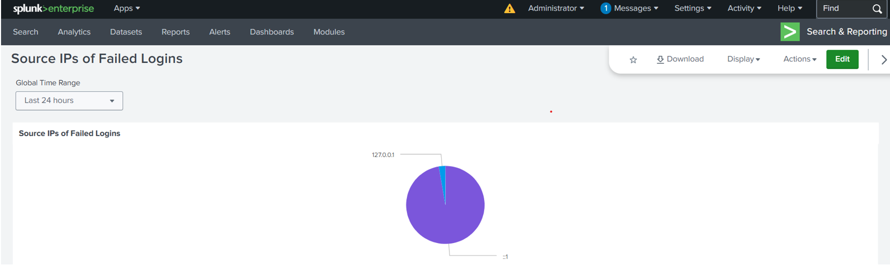

Project 02 / Splunk SIEM Monitoring
Built a simple SOC lab using Splunk to monitor Windows Security logs.
A cybersecurity portfolio project focused on log ingestion, brute-force attack simulation, suspicious activity detection, and dashboard creation using Splunk SIEM.
Project Overview
Security monitoring and brute-force detection using Splunk.
Built a simple Security Operations Center (SOC) lab using Splunk to collect, analyse, and monitor Windows Security Event Logs. The project focused on identifying suspicious authentication activity and visualising failed login trends.
Configure log ingestion
Generate failed login events
Analyse Windows Security logs
Detect suspicious activity
Apply threshold-based logic
Create monitoring dashboards
Tools Used
Technologies and commands used in the SOC lab.
Security Tools
Splunk SIEM
Windows Event Logs
Splunk Dashboard Studio
Commands & Queries
runas /user:fakeuser cmd
EventCode=4625
stats count by Account_Name
rename Account_Name as user
Detection Logic
Brute-force detection using Windows Security Event ID 4625.
Simulated failed login attempts and analysed Windows Security Event Logs to identify abnormal authentication patterns associated with brute-force activity.
index=* sourcetype=WinEventLog:Security EventCode=4625 | stats count as failed_attempts by Account_Name, Source_Network_Address | where failed_attempts >= 5 | sort - failed_attempts | rename Account_Name as user, Source_Network_Address as src_ip
Evidence Gallery
Screenshots and validation evidence from the SOC lab.






Analysis Findings
Suspicious authentication activity identified.
Failed Login Analysis
Analysed repeated failed login attempts associated with specific user accounts and source IP addresses.
Event Visibility Validation
Validated successful ingestion and indexing of Windows Security Event Logs in Splunk.
Controlled Lab Simulation
Observed failed login attempts originating from localhost (::1), confirming simulated attack activity within a controlled lab environment.
Dashboard Creation
Security monitoring dashboards built using Splunk Dashboard Studio.
Dashboard Feature
Purpose
Failed Login Trends
Visualise authentication failures over time
High-Risk Users
Identify accounts with repeated failed logins
Source IP Monitoring
Detect suspicious login activity by source address
Threat Detection
Highlight potential brute-force attacks
Skills Demonstrated
Log Ingestion
Configured Splunk to collect and index Windows Security Event Logs.
Attack Simulation
Generated failed login events to simulate brute-force authentication attempts.
Detection Engineering
Implemented threshold-based detection logic using Splunk SPL queries.
Dashboarding
Created basic dashboards to monitor suspicious authentication activity.